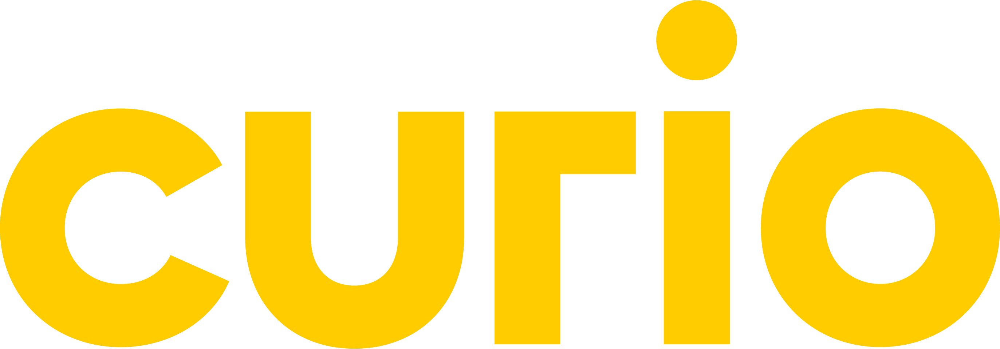
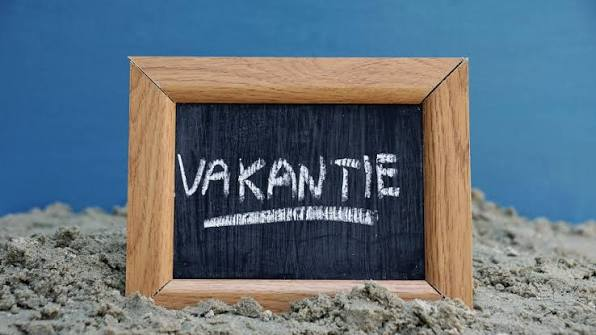
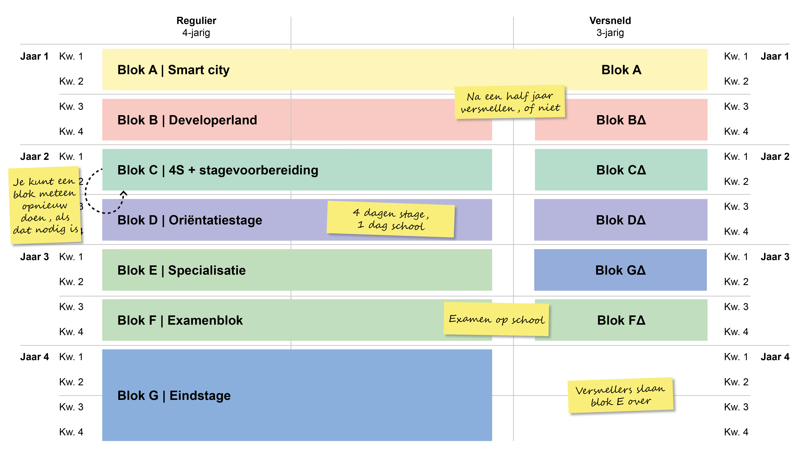

.jpg)
.jpg)
.jpg)

Sfeer op de afdeling Software Development
De sfeer op de afdeling Software Development van Curio is meestal gezellig en ontspannen. Studenten werken veel zelfstandig aan hun opdrachten, maar helpen elkaar ook wanneer iemand ergens niet uitkomt. Er wordt regelmatig gelachen en tussendoor is er ruimte voor een praatje. De docenten zijn goed benaderbaar en proberen je te helpen wanneer je vragen hebt. Hierdoor voelt de afdeling als een fijne plek om te leren en jezelf te ontwikkelen.

Het rooster en de opleiding
Bij de opleiding Software Development van Curio is het schooljaar verdeeld in verschillende vakken en onderdelen. In het rooster staan onder andere Webdevelopment, Nederlands, Engels, programmeren en projecten. Op sommige dagen heb je meerdere lessen achter elkaar en op andere dagen heb je wat meer tijd om zelfstandig aan opdrachten te werken.

Vakanties en vrije dagen
Naast de normale lessen zijn er natuurlijk ook vakanties en vrije dagen. In het schooljaar 2026-2027 heeft Curio onder andere herfstvakantie van 19 t/m 23 oktober, kerstvakantie van 21 december t/m 1 januari, voorjaarsvakantie van 8 t/m 12 februari, meivakantie van 26 april t/m 7 mei en zomervakantie van 26 juli t/m 3 september. Er zijn daarnaast losse vrije dagen, zoals Tweede Paasdag en Tweede Pinksterdag.

De vakken op de opleiding Software Development
Bij Software Development bij Curio krijg je verschillende vakken. Bij PRA leer je programmeren en bij WEB leer je websites maken. Nederlands en Engels helpen je met communicatie. Bij PRO leer je samenwerken en plannen. NAT behandelt verschillende onderwerpen binnen de opleiding. Bij SLB/LOB krijg je begeleiding en werk je aan je toekomst.

Wat biedt Curio aan bij Software Development?
Bij Curio krijg je tijdens Software Development veel mogelijkheden om jezelf te ontwikkelen. Je leert programmeren en software maken met talen zoals C#, PHP en JavaScript. Je kunt de opleiding versnellen of vertragen in overleg met je mentor. Ook zijn er keuzedelen waarmee je je kunt specialiseren, bijvoorbeeld in frontend of mobile development. Je kunt kiezen tussen BOL en BBL. Na de opleiding kun je gaan werken of doorstuderen aan het hbo.
